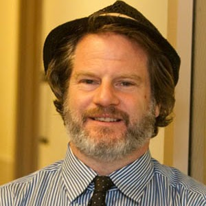
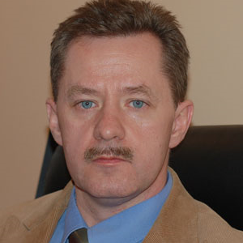
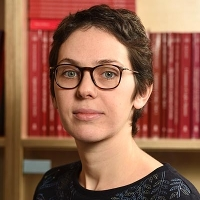

John F. Bailyn
Talk: Russian Word Order and the Fate of Syntactic Theory

Affiliation: Stony Brook University
Current Affiliation: Professor of Linguistics, Director of Department of Linguistics
Research Interests: theoretical syntax, Slavic syntax, musical cognition, contemporary Russian culture and society.
Biography: Originally from Cambridge, Massachusetts. Received his PhD from Cornell University.
Education and Career:
- PhD in Linguistics from Cornell University
- Product of Intensive Russian Immersion programs at Middlebury College and Leningrad State University
- 2003: co-founded the NY-St. Petersburg Institute of Linguistics, Cognition and Culture with Anna Maslennikova
- 1994: founded the American Language Center, Russia's first adult English immersion program
- 2007-2009: directed the State Department's Critical Languages Scholarship program's Russian language institutes
- 2010: created the Advanced Critical Language Institute (ACLI)
Professional Activities:
- Director of the Russia Programs Network for the State University of New York system
- Currently lives in Brooklyn, NY
- Regular faculty member at the Linguistic Society of America's Summer Institute
- Strong advocate for intensive language training methodologies
|
Jacek Witkoś
Talk: Dative and accusative experiencers and anaphoric binding

Affiliation: Poznań University
Current Affiliation: Professor of Humanities, Vice-Rector of Adam Mickiewicz University in Poznań
Research Interests: English linguistics, generative grammar, English syntax and morphology, comparative English-Polish syntax and morphology, syntax of Germanic and Slavic languages.
Biography: Born February 22, 1963, in Szczecin. Polish English philologist specializing in English linguistics.
Education and Career:
- 1986: graduated in Political Sciences from the Institute of Political Sciences and Journalism, UAM
- 1987: graduated in English Philology from the Institute of English Philology, UAM
- 1993: received PhD in Humanities based on "Some Aspects of Phrasal Movement in English and Polish"
- 1998: received Habilitation based on dissertation "The Syntax of Clitics: Steps Toward a Minimalist Account"
- 2006: received the title of Professor of Humanities
- 2010: appointed to the position of Full Professor
Professional Activities:
- Since 1988: employed at the Institute of English Philology, Faculty of Modern Languages, UAM
- 2008-2016: Vice-Rector of UAM for Science and International Cooperation
- Since 2014: Vice-Chairman of the Santander Network
- Guest lecturer at universities in Stuttgart, Tübingen, Ottawa, Tromsø, Leipzig, Berlin, and Göttingen
|
Lisa Bylinina
Talk: Typology of numerals and the number line

Affiliation: Leiden University
Current Affiliation: Assistant Professor in Computational Linguistics at Utrecht University
Research Interests: theoretical linguistics, natural language processing, semantics.
Education and Career:
- Before September 2024: Assistant Professor at the University of Groningen, Center for Language and Cognition (CLCG)
- Since September 2024: Assistant Professor in Computational Linguistics at Utrecht University
- Works in the Language and Communication group, part of the Institute for Language Sciences
- Member of the NLP@U special interest group
Professional Activities:
- Teaches in the Applied Data Science master program
- Teaches in the bachelor program Communication and Information Science
- Supervises research master theses in data science, AI and theoretical linguistics
- Specializes in semantics within theoretical linguistics
|